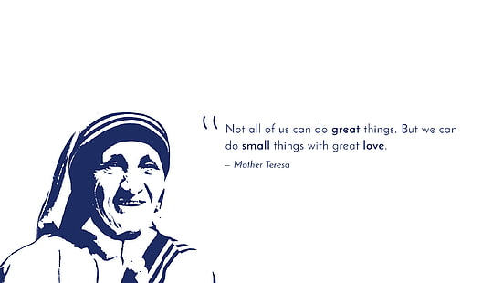

Mother Teresa
A woman , who lived for humanity !

Not all of us can do great thing.But we can do small things with great love.
Here's a timeline of Mother teresa's life...
- 1910 - 26 August 1910 Skopje, Kosovo Vilayet, Ottoman Empire. At the age of twelve, she felt strongly the call of God. She knew she had to be a missionary to spread the love of Christ.
- 1928 - At the age of eighteen she left her parental home in Skopje and joined the Sisters of Loreto, an Irish community of nuns with missions in India.
- 1931-1948 - She took her initial vows as a nun. Mother Teresa taught at St. Mary’s High School in Calcutta, but the suffering and poverty she glimpsed outside the convent walls made such a deep impression on her that in 1948 she received permission from her superiors to leave the convent school and devote herself to working among the poorest of the poor in the slums of Calcutta.
- 1955 - Mother Teresa received permission from the Holy See to start her own order, “The Missionaries of Charity”, whose primary task was to love and care for those persons nobody was prepared to look after.
- 1965 - The Society became an International Religious Family by a decree of Pope Paul VI.Today the order comprises Active and Contemplative branches of Sisters and Brothers in many countries. In 1963 both the Contemplative branch of the Sisters and the Active branch of the Brothers was founded. In 1979 the Contemplative branch of the Brothers was added, and in 1984 the Priest branch was established.
- 1990 - The Missionaries of Charity throughout the world are aided and assisted by Co-Workers who became an official International Association on March 29, 1969. By the 1990s there were over one million Co-Workers in more than 40 countries. Along with the Co-Workers, the lay Missionaries of Charity try to follow Mother Teresa’s spirit and charism in their families.